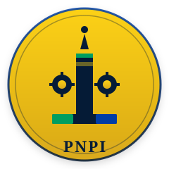
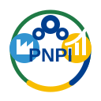

Charte graphique · v1.0 · Avril 2026
Charte graphique PNPI
Règles d'usage de l'identité visuelle de la Plateforme Nationale de Pilotage Industriel — couleurs, polices, logo, principes typographiques.
1. Palette de couleurs
L'identité visuelle PNPI s'inspire directement du drapeau de la République Gabonaise (vert, jaune, bleu) et y ajoute trois couleurs neutres pour la mise en page.
Couleurs primaires (drapeau)
Vert GabonForêt, fertilité, espoir.
#009E60 · RGB(0,158,96)
Jaune GabonSoleil équatorial, générosité civique.
#FCD116 · RGB(252,209,22)
Bleu GabonAtlantique, souveraineté.
#003DA5 · RGB(0,61,165)
Couleurs neutres
Encre profondeTexte principal, en-têtes.
#051B36
Encre douceTexte secondaire, légendes.
#526175
PapierFond principal des documents.
#FAF8F4
Couleurs sémantiques (états)
Succès · Approuvé, OK
#10b981
Attention · SLA en cours
#d97706
Erreur · Rejeté, dépassement
#b42318
Info · Notifications, liens
#0c7eb4
Règles d'usage
OUIBandeau drapeau (3 bandes) en en-tête de tout document officiel. Vert pour les actions positives, jaune pour les distinctions, bleu pour les informations institutionnelles.
NONNe pas mélanger les 3 couleurs primaires sur un même bouton ou élément. Ne jamais utiliser le jaune pour du texte fin (contraste insuffisant). Ne pas inverser l'ordre des bandes du drapeau.
2. Typographie
Titres · Display
Playfair Display
Gras 700-900 · Titres de pages, hero, KPI cards.
Letter-spacing: -0.015em.
Italiques · Accent
Cormorant Garamond
Italiques uniquement · Citations, sous-titres expressifs, mots accent.
Corps · Sans-serif
Inter
300, 400, 500, 600, 700 · Texte courant, UI, navigation, formulaires.
Code · Monospace
JetBrains Mono
Réservé aux blocs de code, identifiants techniques, valeurs d'API.
Hiérarchie typographique
H1 · HeroPlayfair Display 800 · 48-72px
H2 · SectionPlayfair Display 700 · 32-44px
H3 · Sous-sectionInter 700 · 18-22px
CorpsInter 400 · 15px · line-height 1.65
Légende / metaInter 500 · 11-13px · letter-spacing 0.06em
CitationCormorant Garamond italic · 18-26px
3. Logo et symbole

Logo complet · sur fond clair

Symbole seul · sur fond foncé
Construction
- Disque doré : générosité civique, soleil équatorial, valeur transmise à l'État.
- Pilier central : le mât industriel, la colonne de l'agrément ATI, l'ascendance vers l'excellence.
- Étoile sommitale : excellence, distinction officielle, étoile gabonaise.
- Engrenages : pilotage industriel, mécanique du service public.
- Socle tricolore : ancrage dans la République Gabonaise.
Règles d'usage
Espace de protectionRéserver autour du logo un espace équivalent à 1/4 du diamètre du disque doré. Aucun élément graphique ne doit empiéter dans cet espace.
Tailles minimalesLogo complet : 80×80 px en numérique, 25 mm en imprimé. Symbole seul : 24×24 px en numérique, 8 mm en imprimé.
InterditsNe pas modifier les couleurs du logo. Ne pas écraser ou étirer les proportions. Ne pas ajouter d'effets (ombres, halos, gradients alternatifs). Ne pas placer sur un fond qui réduit la lisibilité.
4. Tons et écriture
- Sobre, institutionnel, factuel. Le ton est celui d'une administration moderne, pas d'une startup.
- Citoyen au cœur. Le destinataire est un agent public ou un opérateur — clarté avant rhétorique.
- Verbes d'action en majuscules courtes dans les CTA : « Soumettre », « Valider », « Approuver », « Vérifier ».
- Pas de superlatifs commerciaux (« exceptionnel », « révolutionnaire »). On dit ce qui est, pas ce qu'on voudrait être.
- Accents toujours respectés. Pas d'« etat » ou « operateur » sans accents. Le français de la République Gabonaise.
- Guillemets français « … » avec espaces insécables.
- Jamais de tirets cadratin (—) comme séparateurs : préférer le point médian ( · ) ou les virgules.
5. Iconographie
- Style trait fin uniforme, 1.5 px d'épaisseur sur un viewBox 24×24.
- Couleur : encre profonde (#051B36) sur fond clair, blanc sur fond foncé. Couleur primaire uniquement pour souligner une action.
- Pas d'émojis dans l'interface utilisateur officielle. Les indicateurs de statut utilisent des badges textuels colorés.
- Source recommandée : Lucide Icons ou Heroicons (cohérence trait fin).
6. Application aux supports
Documents officiels (PDF, courriers)
- En-tête : bandeau drapeau (4 px) + emblème République + nom complet du Ministère.
- Pied de page : devise « Union · Travail · Justice » en italique Cormorant + numéro de version.
- Marges A4 : 18 mm haut/bas, 16 mm gauche/droite.
Interface web
- Conteneur principal : largeur max 1100-1200 px, padding latéral 24-32 px.
- Cards :
border-radius: 12-16px, box-shadow: 0 4px 16px rgba(0,0,0,0.05), border: 1px solid #e2e8f0.
- Boutons primaires : fond
#009E60, texte blanc, padding 12-14 px vertical, border-radius 8-12 px.
- Focus visible : outline 2 px solide jaune (
#FCD116) avec offset 2 px.
Vidéo et présentations
- Format 16:9 · 1920×1080 minimum.
- Polices identiques (Playfair, Inter, Cormorant) embarquées ou rendues à plat.
- Bandeau drapeau d'ouverture obligatoire dans toute production officielle.